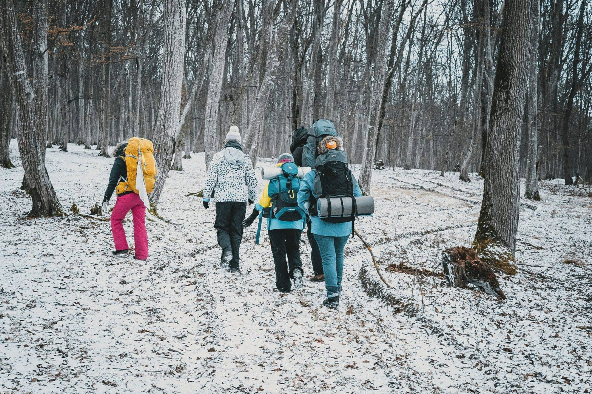

Hike-ul de iarnă de la Nocrich

Experiența mea la Nocrich a fost una faină și unică. A fost prima oară acolo și am plecat cu o părere foarte bună.
Hai să vă spun cum a început totul: Am ajuns acolo chiar după revelion, chiar cu ceva timp înaintea celorlalți concurenți. Prima zi a fost chill, ne-am cunoscut noi între noi; participanții adică, și am jucat ceva boardgames. Seara primei zile a fost cea care avea să marcheze acest camp în schimb. Mai exact, momentul în care 4 lonewolf au fost puși într-un grup și astfel formandu-se patrula “The Reavers of Dorne”. Patrulă ce avea să ajungă foarte departe.
Hai să începem cu începutul: Prima zi de hike a fost usoră, un traseu scurt ce avea ca scop sa ne învețe cum merg lucrurile în acest hike de iarnă. Lucrurile interesante încep abia din a 3 a zi, in care are loc prima parte a hike-ului mare (hike format din 2 zile). De aici incepe o aventură pe care dacă aș începe să o descriu prin scris nu ar avea vreun farmec, pentru că unele lucruri trebuie trăite, nu doar povestite. Pe scurt…am fost activi, am avut inițiativă, idei, energie și ce e cel mai important e că am vrut să ne distrăm.
Astfel hike ul de iarnă se sfârșește cu victoria patrulei noastre, victorie care ne-a motivat pe noi ca și patrulă să continuăm în formula asta și mai departe. Nu victoria a fost totul desigur. Ne distram la fel de bine și dacă nu o aveam. Dar adevarul e că ne bucurăm de această realizare și vrem să continuăm tot așa. Sperăm să ne și iasă :). ( Seba, explorator)
După un Revelion cu adevărat magic, Seba și cu mine, cei doi lupi singuratici de la Cabana Scout, ne-am încumetat să rămânem și în Hike-ul de Iarnă Nocrich. Și așa, pentru câteva zile, Centrul Scout Nocrich a devenit Castle Black, adăpostind case de renume din tot Westeros.
Miercuri (2 ianuarie) a fost o zi de acomodare, când m-am revăzut cu buni prieteni, dar am și cunoscut omuleți faini. Am avut parte de o deschidere cu adevărat ruptă din Urzeala Tronurilor și un joc liniștit de Jungle Speed cu cercetașii din Deva: mesele și scaunele au rămas intacte, piciorul meu mai puțin..
Joi am avut niște ateliere de dimineață, timp în care mi-am cunoscut patrula (Jakob, Theresa și Teresa din Austria și Alexa din Tulcea), ne-am ales numele Schatten-Mâță, apoi am plecat pe Test Hike. Așa am reușit să ne acomodăm și să lucrăm împreună (în engleză, română, germană, limbajul semnelor) și am primit o binecuvântare de la preotul din sat, întâlnit pe drum.
Vineri a început aventura, când am plecat în hike-ul de 2 zile. Frig, zăpadă, câini fioroși de stână și…am menționat frigul? Cea mai frumoasă parte din zi a fost când ne-am adunat toate 9 patrulele să căutăm copacul cu primul azimut, ce nu se indupleca să ni se arate (trăiască tulcenii care l-au găsit). A fost și singurul moment de pe traseu când ne-am strâns toți la un loc. Seara, am ajuns cu toții într-un sat, Vurpăr, și ne-am stabilit la primărie. Deja simțeam cum începem să ne întelegem mai bine în patrulă, mai ales că aveam deja glumele noastre și un dans de încălzire bine pus la punct. Și am dormit…ziceam ceva de frig?
Sâmbătă am plecat vioi pe traseul aventuros inapoi spre Nocrich. Dacă în prima zi credeam că văzusem prea mulți câini de stână, ne înșelasem. Drumul de întoarcere a arătat așa: o încercare de triangulare (singurul lucru care ne-a bătut), niște ture de alergare la -14 grade, un challenge cu sfoara pe care numai noi l-am rezolvat și un concurs de mâncat eugenii. Nu mai spun de ingenioasele moduri de orientare de la un checkpoint la altul. Am ajuns a doua patrulă la Nocrich (imediat după Craiova) și am dat fuga la duș. Apoi o seară de chităreală la focul de tabără și depănat amintiri.
Ultima zi, duminică (6 ianuarie). Nu voiam să conștientizez că urma să plecăm, așa că am făcut multe planuri de revederi, vizite la Viena sau în București sau în orice oraș ne putem revedea.
Cam așa am salvat noi Westeros de whitewalkers. Sigur revin la vară, la iarnă, peste 2 veri, peste 2 ierni.(Scrio, explorator)